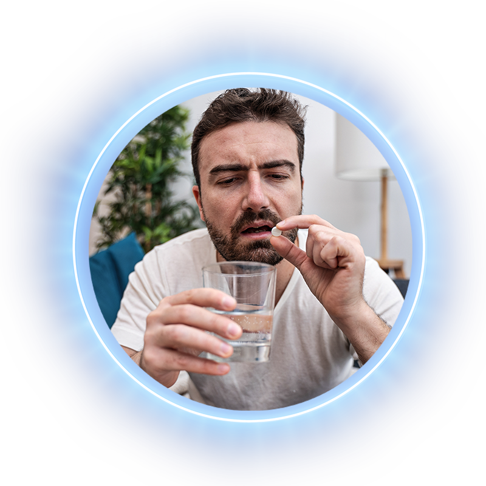
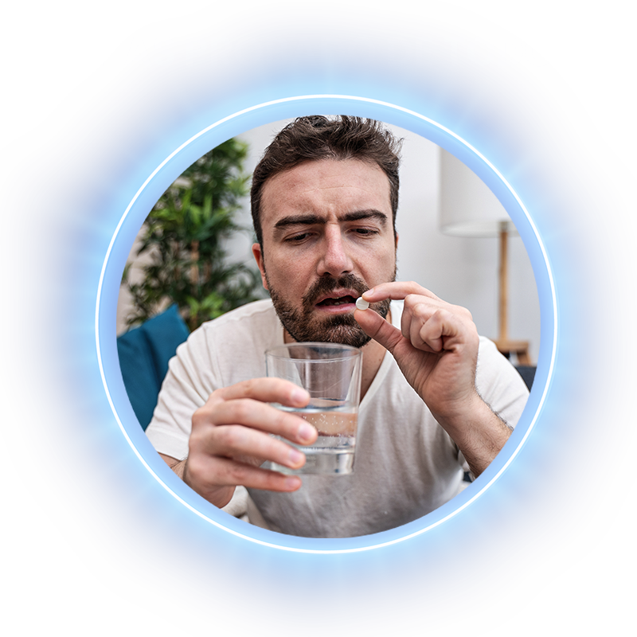

¿Alguna vez has sufrido uno de
estos síntomas?


 

¿Qué es el reflujo gastroesofágico?
Este padecimiento se caracteriza por el ascenso del ácido del estómago hacia el esófago, y es tan común, que se estima que 1 de cada 5 mexicanos pueden padecer de ardor estomacal o reflujo al menos una vez a la semana.1

HAZ CLIC PARA CONOCER los principales malestares que presentan las personas con estas afecciones

HAZ CLIC PARA CONOCER en quiénes se presentan mayormente estas afecciones
HAZ CLIC PARA CONOCER las principales complicaciones que pueden desarrollarse si padeces una de estas afecciones
¿Llevas tiempo con estos síntomas y te han tratado con los medicamentos denominados “prazoles”, pero aún no sientes alivio?
¡Esta es la solución que buscas!
PRESENTA UN NUEVO TRATAMIENTO MÉDICO
Anteriormente, el tratamiento de estos padecimientos se hacía con el uso de los medicamentos llamados “Prazoles”, sin embargo, CARNOT(R) trae una alternativa innovadora llamada BLOQUEADORES DE ÁCIDO COMPETITIVO DE POTASIO (P‑CABs) que ha demostrado un mejor efecto en la regulación de la acidez gástrica.
P‑CABs4,5,6


Rápido alivio de los síntomas a los 30 minutos de la primera toma.

Control sostenido por 24 horas evitando los molestos síntomas nocturnos de acidez y agruras.

Mayor apego al tratamiento al ser una sola toma al día.

Es generalmente bien tolerado y tiene pocos efectos adversos.

Potente por su mecanismo de acción innovador.

Practicidad en su uso ya que se puede tomar con o sin alimentos.
PRAZOLES4,5

Tardan de 3 a 5 días en brindarte su máximo beneficio.

Poco efectivo para los síntomas nocturnos, debido al menor tiempo de acción ya que el efecto puede disminuir por el consumo de alimentos.

En los esquemas que requieren múltiples tomas al día es más difícil el correcto apego al tratamiento.

Se debe tomar al menos 30 minutos antes de los alimentos.7
CARNOT®, al ser una empresa líder en el ramo farmacéutico, hace posible que esta nueva opción de tratamiento esté disponible en México por primera vez, siendo el segundo país en todo el mundo en tener acceso a los P‑CABs.
Ahora ya lo sabes, si tienes alguno de los síntomas mencionados o el uso del tratamiento convencional no te ha dado los resultados esperados, consulta con tu médico la nueva solución terapéutica que CARNOT® trae a México para ti.
¡Vive sin reflujo desde hoy!
Referencias:
1. Huerta-Iga F, Bielsa-Fernández MV, Remes-Troche JM, Valdovinos-Díaz MA, Tamayo-de la Cuesta JL. Diagnóstico y
tratamiento de la enfermedad por reflujo gastroesofágico: recomendaciones de la Asociación Mexicana de
Gastroenterología. Revista de Gastroenterología de México. 2016 Oct 1;81(4):208–22.
2. Alshammari SA, Alabdulkareem AM, Aloqeely KM, Alhumud MI, Alghufaily SA, Al-Dossare YI, et al. The Determinants
of the Quality of Life of Gastroesophageal Reflux Disease Patients Attending King Saud University Medical City.
Cureus. 2020 Aug 1;12(8):e9505–e9505.
3. IMSS. La Úlcera Péptica, entre las Primeras Causas de Demanda de Consulta en el IMSS [Internet]. 2019
[Consultado el 9 de mayo del 2023]. Disponible en: http://www.imss.gob.mx/prensa/archivo/201905/127
4. Mermelstein J, Mermelstein AC, Chait MM. Tegoprazan to treat gastroesophageal reflux disease. Drugs Today
(Barc). 2020 Nov;56(11):715-721.
5. Cho YK, Choi M-G, Choi SC, Lee KM, Kim TO, Park S-H, et al. Randomised clinical trial: tegoprazan, a novel
potassium-competitive acid blocker, or lansoprazole in the treatment of gastric ulcer. Alimentary pharmacology &
therapeutics. 2020 Sep;52(5):789–97.
6. Lee KJ, Son BK, Kim GH, Jung H-K, Jung H-Y, Chung I-K, et al. Randomised phase 3 trial: tegoprazan, a novel
potassium-competitive acid blocker, vs. esomeprazole in patients with erosive oesophagitis. Alimentary
pharmacology & therapeutics. 2019 Apr;49(7):864–72.
7. Ochoa D, Román M, Cabaleiro T, Saiz-Rodríguez M, Mejía G, Abad-Santos F. Effect of food on the pharmacokinetics
of omeprazole, pantoprazole and rabeprazole. BMC Pharmacology and Toxicology. 2020 Jul 25;21(1):54.
Reg. San. 023M2023 SSA IV
Permiso de Publicidad XXXXXXXX
CARNOT® LABORATORIOS TODOS LOS DERECHOS RESERVADOS. NICOLÁS SAN JUAN 1046, COLONIA DEL VALLE C.P. 03100, CIUDAD DE MÉXICO, MÉXICO.